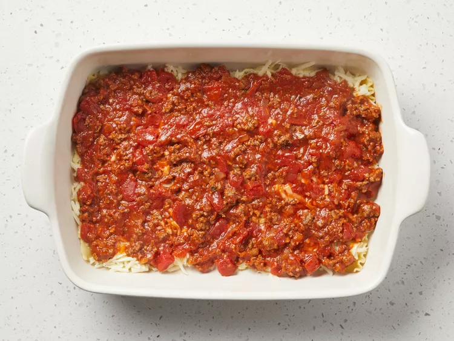

American Lasagna recipe
Then click on Home to access the home page again

Ingredients
- 1 pound lean ground beef
- 1 onion chopped
- 2 cloves of garlic, minced
- 1 can (29 ounces) diced tomatoes
- 2 cans (6 ounces) tomato paste
- 2 tablespoons brown sugar
- 1 tablespoon chopped fresh basil
- 2 ½ teaspoons salt, divided
- 1 teaspoon dried oregano
- 12 dried lasagna noodles
- 1 pint part-skim ricotta cheese
- ½ cup grated Parmesan cheese
- 2 large eggs beaten
- 2 tablespoons dried parsley
- 1 pound grated mozzarella cheese
- 2 tablespoons grated Parmesan cheese
Steps
- Gather all the ingredients.

- Cook and stir ground beef, onion, and garlic in a large skillet over medium heat 5 minutes; drain the fat.

- Mix diced tomatoes, tomato paste, brown sugar, basil, 1 half teaspoon salt, and oregano. Simmer meat sauce, stirring occasionally, for 30 to 45 minutes.
- Preheat oven to 375 degrees F (190 degrees C).
- Meanwhile, bring a large pot of lightly salted water to a boil. Cook lasagna noodles in boiling water, stirring occasionally, until tender but firm to the bite, about 8 minutes; drain them. Place the noodles on towels and dry them.
- Mix the ricotta, half a cup of Parmesan cheese, eggs, parsley, and remaining teaspoon salt in a medium bowl.
- Place one-third of the noodles in the bottom of a 9 x 13-inch baking dish. Top with half of the ricotta mixture.
- Top the ricotta mixture with half of the mozzarella cheese and 1/3 of the meat sauce.

- Repeat. Cover with the remaining noodles and meat sauce. Sprinkle 2 tablespoons of Parmesan cheese on top.
- Bake in preheated oven for 30 minutes. Let rest 10 minutes before serving.¡Ready!